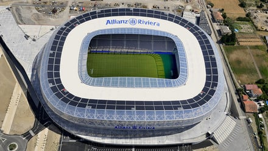

Treinador: Claude Puel
A história de Claude Puel é marcada pela longevidade e autoridade, onde a sua fidelidade como jogador do Mónaco deu lugar a uma carreira de treinador prestigiada, definida pela conquista da Ligue 1 e pela excelência na formação de novos talentos na Europa.
Estádio: Allianz Riviera
O Allianz Riviera é o símbolo da modernização e do compromisso ecológico do OGC Nice, concebido para elevar o clube a um novo patamar de excelência desportiva e sustentabilidade na Côte d'Azur.

Estilo de Jogo:
No seu regresso ao OGC Nice, o estilo de jogo de Claude Puel em 2026 adaptou-se a uma missão de urgência, afastando-se do futebol mais vistoso da sua primeira passagem para um modelo de sobrevivência e pragmatismo.
"Issa Nissa!"